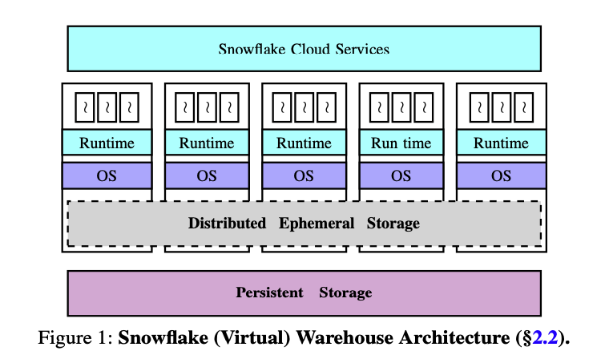
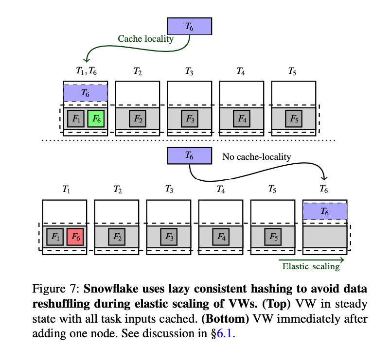
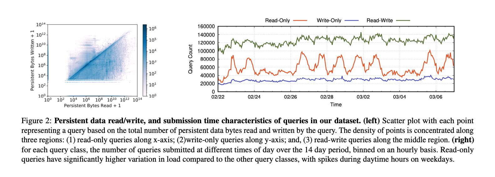
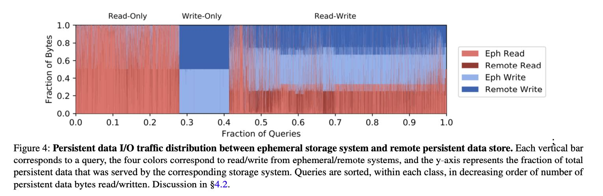
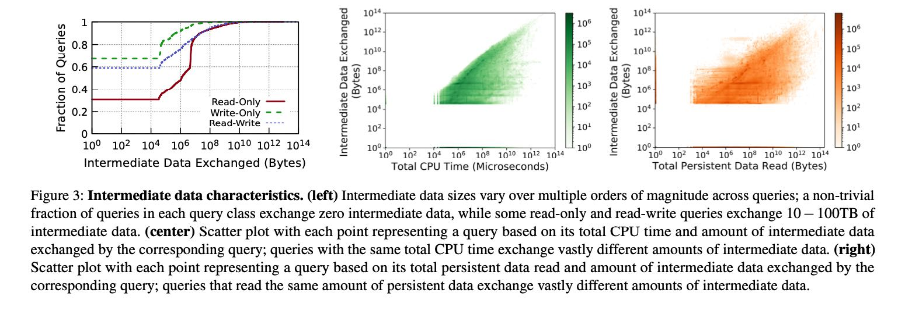
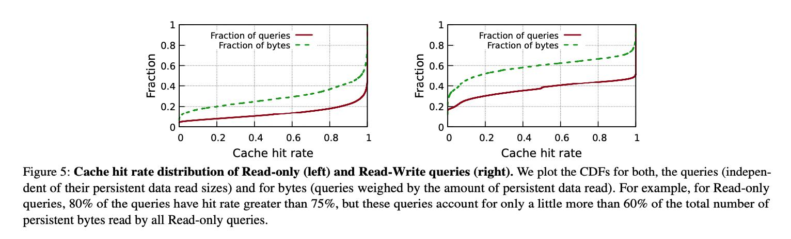
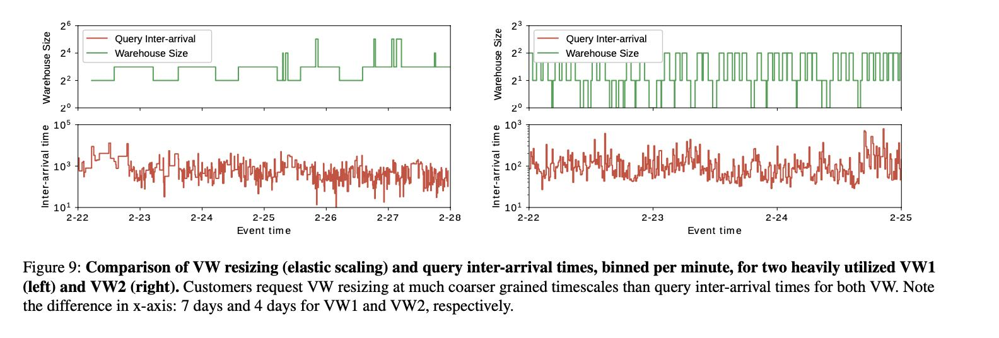
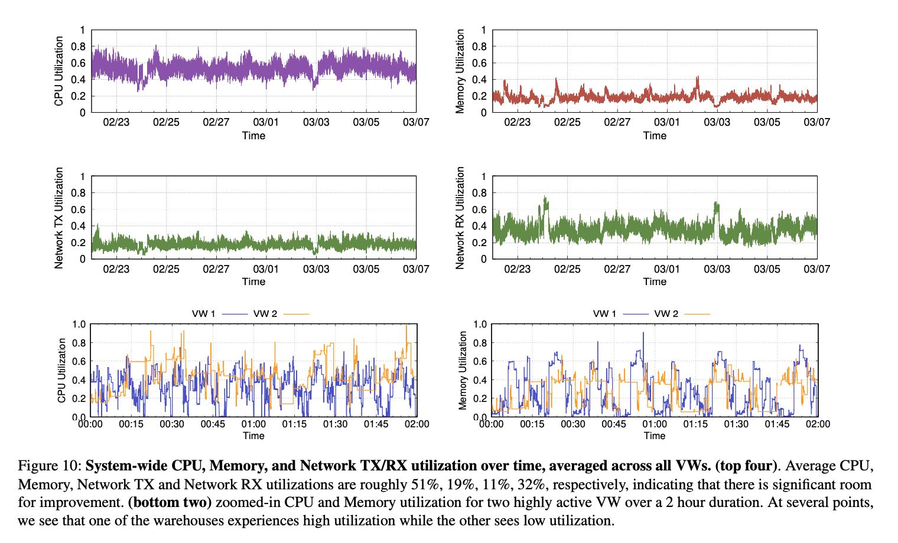

Building An Elastic Query Engine on Disaggregated Storage
Table of Contents
1. 主要内容
这篇文章主要是对历史上Snowflake使用情况进行数据分析，数据是2018年2月份内连续14天大约70M条query的执行情况。根据这些数据以及客户反馈，介绍一下他们现在当前实现以及未来工作。 https://github.com/resource-disaggregation/snowset
分析结果大致如下：
- Read-Only/Write-Only/Read-Write 比例大约是 28%, 13%, 50%. Write-Only主要是用于导入数据，而Read-Write主要是ETL这类任务。
- Intermediate data size在查询之间变化范围很大(100x ~ 1000x), 并且和读取数据量几乎没有关系。
- Persisten data cache即便是很小，考虑到spatial/temporal, cache hit rates也是非常高的可以到60~80%左右。
- 只有~20%的用户使用了弹性（Snowflake还是手动弹性？）所以自动弹性是需要的。
- 虽然peak resource util很高，但是avg resource util不高，并且各个资源时间使用有mismatch. CPU/Memory/Network Tx/Rx平均值是 51%, 19%, 11%, 32%.
未来的探索方向包括：
- compute和ephermal storage继续分离。除非EC2提供更加灵活的CPU/instance storage配比，两者之间比例始终有点跟不上实际情况。
- Deep storage hierarchy. 现在的层次是mem/ssd/S3, 好像是会再加一层NVMe, 之间淘汰策略就需要在设计设计。
- Pricing at sub-second timescales. 现在VW提供pre-warmed pool, 主要原因是cloud vendor大多是按照小时粒度进行计费的, pre-warmed pool打开30s和1小时是一样的费用。但是如果cloud vendor按照second计费的话，那么pre-warmed pool策略就不行了。on demand来启动也不太好，最好是可以做到multi-tenancy, 多个tenants之间做resource-sharing. 但是这个又有隔离问题。
2. 实现细节
文章里面Snowflake把这个存储系统称为Distributed Ephemeral Storage(DES). 不过可能这个Distributed纯粹就是概念上的，每个instance还是各自管理自己的ephemeral storage/instance storage, 使用consistent hashing来解决cache hit/reshuffle问题。后面为了方便指代，还是使用local storage/instance storage来称呼。

Instance storage上面存储的东西有两类：
- Persistent Data. 这个可以认为就是remote storage上的local cache. 不过因为Snowflake自己管理数据的读写，所以它使用的是write-through cache, 先写本地然后放在S3上。
- Intermediate data. 这个可以认为是exchange operator之间的传输数据，一方面是考虑到spill, 一方面也可以考虑到failover. 如果出现故障的话，那么这个节点上的数据是可以恢复的。
Persistent data is customer data stored as tables in the database. Each table may be read by many queries, over time or even concurrently. These tables are thus long-lived and require strong durability and availability guarantees.
Intermediate data is generated by query operators (e.g., joins) and is usually consumed by nodes participating in executing that query. Intermediate data is thus short-lived. Moreover, to avoid nodes being blocked on intermediate data access, low-latency high-throughput access to inter- mediate data is preferred over strong durability guarantees. Indeed, in case of failures happening during the (short) lifetime of intermediate data, one can simply rerun the part of the query that produced it.
Snowflake enables statistical multiplexing of ephemeral storage system capacity between intermediate data and persis- tent data by “opportunistically” caching frequently accessed persistent data files, where opportunistically refers to the fact that intermediate data storage is always prioritized over caching persistent data files.
Maintaining the right system semantics during opportunis- tic caching of persistent data files requires a careful design. First, to ensure data consistency, the “view” of persistent files in ephemeral storage system must be consistent with those in remote persistent data store. We achieve this by forcing the ephemeral storage system to act as a write-through cache for persistent data files.
在提高cache hit rate上面，调度使用consistent hashing的方式将persisten data files发送到不同节点上，这样如果节点结构不变化的话，cache hit rate就非常高。如果节点结构发生变化，新起来的节点也不会立刻去主动去persisten data加载cache. 按照文章说法就是lazy consistent hasing, 好像也是很自然的方式吧。
To fully exploit the ephemeral storage system, Snowflake colocates each task with persistent data files that it operates on using a locality-aware scheduling mechanism (recall, these files may be cached in ephemeral storage system). Specifically, recall that Snowflake assigns persistent data files to compute nodes using consistent hashing over table file names. Thus, for a fixed VW size, each persistent data file is cached on a specific node. Snowflake schedules the task that operates on a persistent data file to the node on which its file consistently hashes to.
Snowflake resolves this challenge using a lazy consistent hashing mechanism, that completely avoids any reshuffling of data upon elastic scaling of nodes by exploiting the fact that a copy of cached data is stored at remote persistent data store. Specifically, Snowflake relies on the caching mecha- nism to eventually “converge” to the right state.

3. 多个角度解读数据
读写情况如下图，看上去Read > Write. Read-Only都是在weekdays:)

Read/Write在Eph Storage/Remote Storage上的比例. Read大部分都可以从Eph上来，Write因为是write-through cache所以remote/eph差不多是1:1.

各种Workload上Intermediate的数据，包括大小，耗费CPU时间，以及和原始数据的比例。可以看到和CPU/原始数据之间没有啥相关性。但是注意因为intermediate和persistet data都是放在instance storage上的，相互之间是会影响的，所以考察这个很有意义。

Persistent data cache hit rate情况，说实话我没有太看懂这个图，论文里面有个解释。总之就是即便Eph storage capacity只有persistent data的0.1%, 因为temporal/spatial, cache hit rate依然很高，不管是read-only还是read-write workload.

Even though our ephemeral storage capacity is significantly lower than that of a customer’s persistent data (around 0.1% on an average), skewed file access distributions and temporal file access patterns common in data warehouses [7] enable reasonably high cache hit rates (avg. hit rate is close to 80% for read-only queries and around 60% for read-write queries). Figure 5 shows the hit rate distributions across queries. The median hit rates are even higher.
4. 关于Multi-tennancy
为啥要做multi-tennancy有几个理由：
- 目前用户很少主动去做resize (~82%)
- 即便做resize, resize internal的粒度和query arrival粒度相差很大。也就是说，大量query到达之后，需要等待一段时间才回调整大小。
- 从CPU使用情况上看，多个VW之间 burst是相互避开的，可以sharing.
- cloud vendor计费粒度从小时变为秒，之间的pre-warmed pool策略就不好。如果可以做到cross-tenancy pre-warmed pool的话，很大程度上就可以解决这个问题。
Resource sharing 最主要的问题就是，平均性能做到容易，但是长尾性能做好就难。如果从instance storage角度考虑，还有两个问题：1. 对于单个instance, 如何平衡多个tenant之间空间使用 2. 如果comute和eph storage分离，eph storage为了某个user看扩容的话，如何只让这个user使用扩容的eph storage.
The challenge, however, is to achieve isolation properties close to our current architecture. The key metric of interest from customers’ point of view is query performance, that is, end-to-end query completion times. While a purely shared architecture is likely to provide good average-case perfor- mance, maintaining good performance at tail is challenging.
First, since our ephemeral storage system multiplexes both cached persistent data and in- termediate data, both of these entities need to be jointly shared while ensuring cross-tenant isolation.
The second challenge is that of achieving elasticity without cross-tenant interference: scaling up the shared ephemeral storage system capacity in order to meet the demands of a par- ticular customer should not impact other tenants sharing the system.
resize 粒度和query arrival 粒度不太匹配

多个VW之间（最下面两张图）资源可以共享
